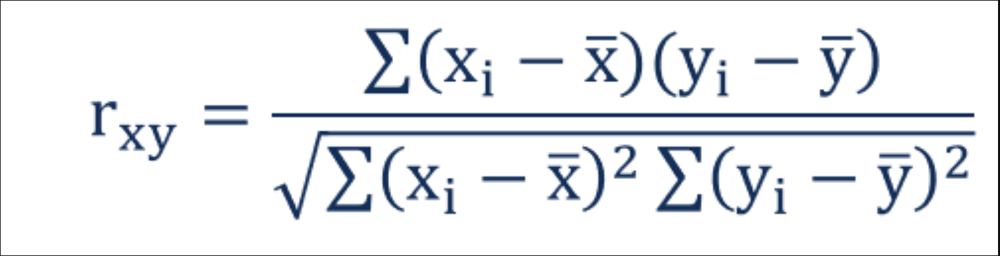
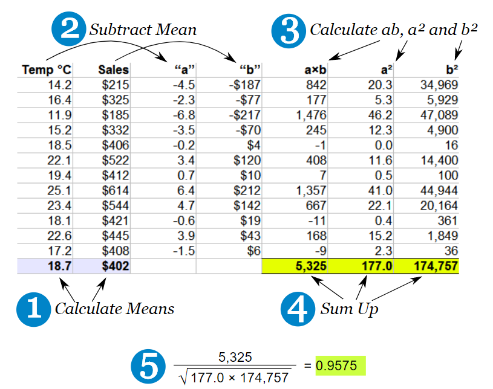
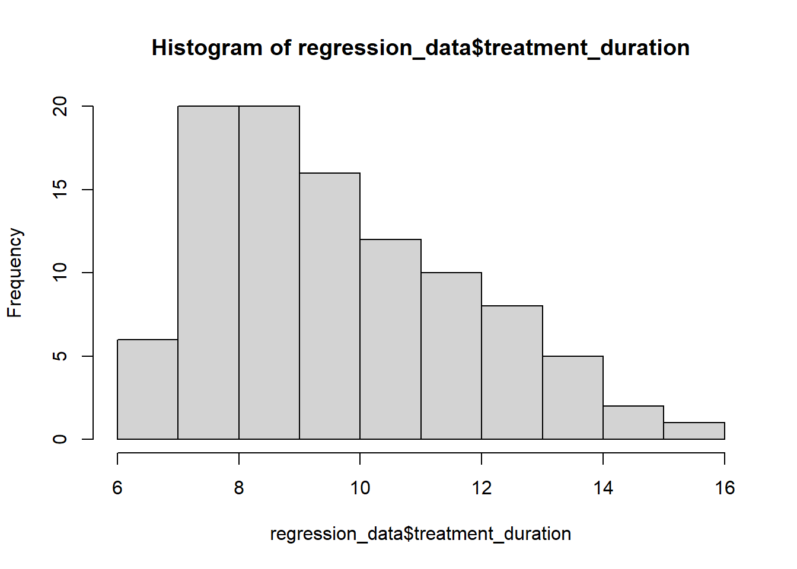
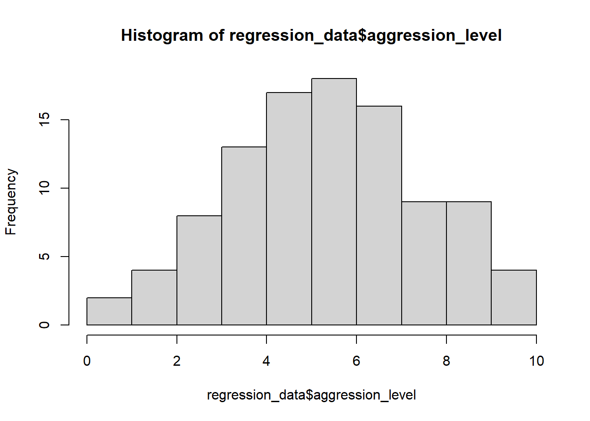
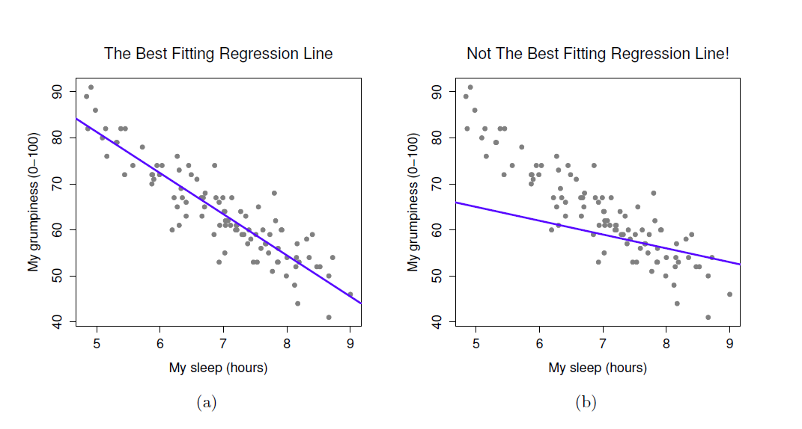
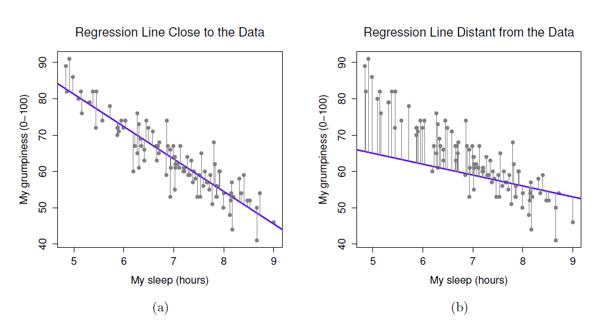

5 Correlation
5.1 What is Correlation?
- The relationship between 2 variables
- Question: Is treatment duration related to aggression levels?
5.2 How is correlation calculated?
- Think of this as covariance divided by individual variance
- If the changes are consistent with both variables, the final value will be higher

5.3 Running correlation in R
- Step 1: Check assumptions
- Data,distribution,linearity
- Step 2: Run correlation
- Step 3: Check R value
- Step 4: Check significance
5.3.1 Check assumptions: data
- Parametric tests require interval or ratio data
- If the data are ordinal then a non-parametric correlation is used
What type of data are treatment duration and aggression level?
5.3.2 Check assumptions: distribution
- Parametric tests require normally distributed data


5.3.3 Check assumptions: distribution #2
- Parametric tests require normally distributed data
Shapiro-Wilk normality test
data: regression_data$treatment_duration
W = 0.94971, p-value = 0.0007939
Shapiro-Wilk normality test
data: regression_data$aggression_level
W = 0.9928, p-value = 0.8756- The normality assumption is less of an issue when sample size is > 30
5.3.4 Checking assumptions: linearity

- Here we are looking to see if the relationship is linear
5.3.5 Run correlation
- R can run correlations using the cor.test() command
Pearson's product-moment correlation
data: regression_data$treatment_duration and regression_data$aggression_level
t = -9.5503, df = 98, p-value = 1.146e-15
alternative hypothesis: true correlation is not equal to 0
95 percent confidence interval:
-0.7838251 -0.5765006
sample estimates:
cor
-0.6942996 5.3.6 Check r Value (correlation value)
- The r value tells us the strength and direction of the relationship
- In the output it is labelled as “cor” (short for correlation)
Pearson's product-moment correlation
data: regression_data$treatment_duration and regression_data$aggression_level
t = -9.5503, df = 98, p-value = 1.146e-15
alternative hypothesis: true correlation is not equal to 0
95 percent confidence interval:
-0.7838251 -0.5765006
sample estimates:
cor
-0.6942996 5.3.7 Check the significance of the correlation
- We can see that the significance by looking at the p value
- The significance is 1.146^-15
- This means: 0.0000000000000001146
- Therefore p value < 0.05
Pearson's product-moment correlation
data: regression_data$treatment_duration and regression_data$aggression_level
t = -9.5503, df = 98, p-value = 1.146e-15
alternative hypothesis: true correlation is not equal to 0
95 percent confidence interval:
-0.7838251 -0.5765006
sample estimates:
cor
-0.6942996 6 Simple Regression
6.1 What is regression?
- Testing to see if we can make predictions based on data that are correlated
We found a strong correlation between treatment duration and agression levels. Can we use this data to predict aggression levels of other clients, based on their treatment duration?
- When we carry out regression, we get a information about:
- How much variance in the outcome is explained by the predictor
- How confident we can be about these results generalising (i.e. significance)
- How much error we can expect from anu predictions that we make (i.e. standard error of the estimate)
- The figures we need to calculate a predicted outcome value (i.e. coefficient values)
6.2 How is regression calculated?

- When we run a regression analysis, a calculation is done to select the “line of best fit”
- This is a “prediction line” that minimises the overall amount of error
- Error = difference between the data points and the line
6.3 The regression equation
Once the line of best fit is calculated, predictions are based on this line
-
To make predictions we need the intercept and slope of the line
- Intercept or constant= where the line crosses the y axis
- Slope or beta = the angle of the line
Predictions are made using the calculation for a line: Y = bX + c
You can think of the equation like this:
predicted outcome value = beta coefficient * value of predictor + constant
6.4 Running regression in R
- Step 1: Run regression
- Step 2: Check assumptions
- Data
- Distribution
- Linearity
- Homogeneity of variance
- Uncorrelated predictors
- Indpendence of residuals
- No influental cases / outliers
- Step 3: Check R^2 value
- Step 4: Check model significance
- Step 5: Check coefficient values
6.5 Run regression
- We use the lm() command to run regression while saving the results
- We then use the summary() function to check the results
Call:
lm(formula = aggression_level ~ treatment_duration, data = regression_data)
Residuals:
Min 1Q Median 3Q Max
-3.4251 -1.1493 -0.0593 0.8814 3.4542
Coefficients:
Estimate Std. Error t value Pr(>|t|)
(Intercept) 12.3300 0.7509 16.42 < 2e-16 ***
treatment_duration -0.6933 0.0726 -9.55 1.15e-15 ***
---
Signif. codes: 0 '***' 0.001 '**' 0.01 '*' 0.05 '.' 0.1 ' ' 1
Residual standard error: 1.551 on 98 degrees of freedom
Multiple R-squared: 0.4821, Adjusted R-squared: 0.4768
F-statistic: 91.21 on 1 and 98 DF, p-value: 1.146e-156.6 What are residuals?
- In regression, the assumptions apply to the residuals, not the data themselves
- Residual just means the difference between the data point and the regression line

6.7 Check assumptions: distribution
- Using the plot() command on our regression model will give us some useful diagnostic plots
- The second plot that it outputs shows the normality
- We could also use a histogram to check the distribution
- Notice how we can use the $ sign to get the residuals from the model
6.8 Check assumptions: linearity
- Using the plot() command on our regression model will give us some useful diagnostic plots
- The first plot that it outputs shows the residuals vs the fitted values
- Here, we want to see them spread out, with the line being horizontal and straight
- There is a slight amount of curvilinearity here but nothing to be worried about
6.9 Check assumptions: Homogeneity of Variance #1
- We can use the sample plot to check Homogeneity of Variance
- We want the variance to be constant across the data set. We do not want the variance to change at different points in the data

- A violation of Homogeneity of Variance would usually look like a funnel, with the data narrowing

6.10 Check assumptions: Influential cases
- We need to check that there are no extreme outliers - they could throw off our predictions
- We are looking for participants that have high rediduals + high leverage
- Some guidance suggests anything higher than 1 is an influential case
- Others suggest 4/n is the cut off point (4 divided by number of participants)
- We are looking for participants that have high rediduals + high leverage
- No cases over 1
- Many are over 0.04 (4/n = 0.04)
6.11 Check the r squared value
- r^2 = the amount of variance in the outcome that is explained by the predictor(s)
- The closer this value is to 1, the more useful our regression model is for predicting the outcome
Call:
lm(formula = aggression_level ~ treatment_duration, data = regression_data)
Residuals:
Min 1Q Median 3Q Max
-3.4251 -1.1493 -0.0593 0.8814 3.4542
Coefficients:
Estimate Std. Error t value Pr(>|t|)
(Intercept) 12.3300 0.7509 16.42 < 2e-16 ***
treatment_duration -0.6933 0.0726 -9.55 1.15e-15 ***
---
Signif. codes: 0 '***' 0.001 '**' 0.01 '*' 0.05 '.' 0.1 ' ' 1
Residual standard error: 1.551 on 98 degrees of freedom
Multiple R-squared: 0.4821, Adjusted R-squared: 0.4768
F-statistic: 91.21 on 1 and 98 DF, p-value: 1.146e-15- The r^2 of 0.482052 means that 48% of the variance in aggression level is explained by treatment duration
6.12 Check model significance
- The model significance is displayed at the very end of the output
- p-value: 1.146e-15
- As p < 0.05, the model is significant
Call:
lm(formula = aggression_level ~ treatment_duration, data = regression_data)
Residuals:
Min 1Q Median 3Q Max
-3.4251 -1.1493 -0.0593 0.8814 3.4542
Coefficients:
Estimate Std. Error t value Pr(>|t|)
(Intercept) 12.3300 0.7509 16.42 < 2e-16 ***
treatment_duration -0.6933 0.0726 -9.55 1.15e-15 ***
---
Signif. codes: 0 '***' 0.001 '**' 0.01 '*' 0.05 '.' 0.1 ' ' 1
Residual standard error: 1.551 on 98 degrees of freedom
Multiple R-squared: 0.4821, Adjusted R-squared: 0.4768
F-statistic: 91.21 on 1 and 98 DF, p-value: 1.146e-156.13 Check coefficient values
- The coefficient values are displayed in the coefficients table
- If we have more than one predictor, they are all listed here
Estimate Std. Error t value Pr(>|t|)
(Intercept) 12.3300211 0.75087601 16.420848 6.840516e-30
treatment_duration -0.6933201 0.07259671 -9.550297 1.145898e-15- The beta coefficient for treatment duration is in the Estimate column
- For every unit increase in treatment duration, aggression level decreases by 0.69
6.14 The regression equation
- The regression equation is:
Outcome = predictor value * beta coefficient + constant
- For this model, that is:
Aggression level = treatment duration * -0.69 + 12.33
6.15 Accounting for error in predictions
- We also know that the accuracy of predictions will be within a certain margin of error
- This is known as standard error of the estimate or residual standard error
Call:
lm(formula = aggression_level ~ treatment_duration, data = regression_data)
Residuals:
Min 1Q Median 3Q Max
-3.4251 -1.1493 -0.0593 0.8814 3.4542
Coefficients:
Estimate Std. Error t value Pr(>|t|)
(Intercept) 12.3300 0.7509 16.42 < 2e-16 ***
treatment_duration -0.6933 0.0726 -9.55 1.15e-15 ***
---
Signif. codes: 0 '***' 0.001 '**' 0.01 '*' 0.05 '.' 0.1 ' ' 1
Residual standard error: 1.551 on 98 degrees of freedom
Multiple R-squared: 0.4821, Adjusted R-squared: 0.4768
F-statistic: 91.21 on 1 and 98 DF, p-value: 1.146e-15